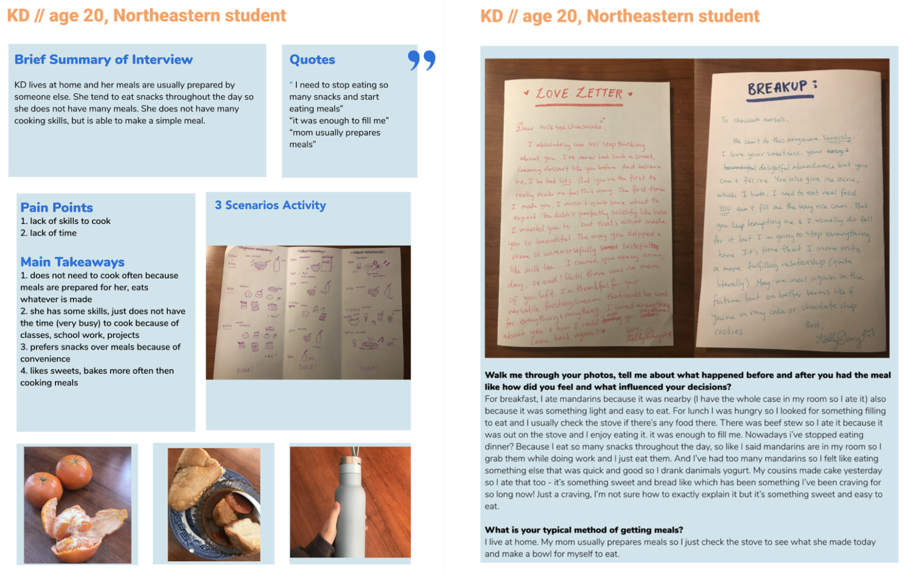
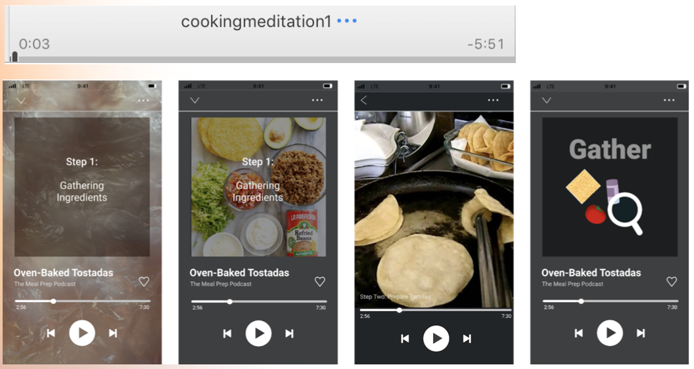
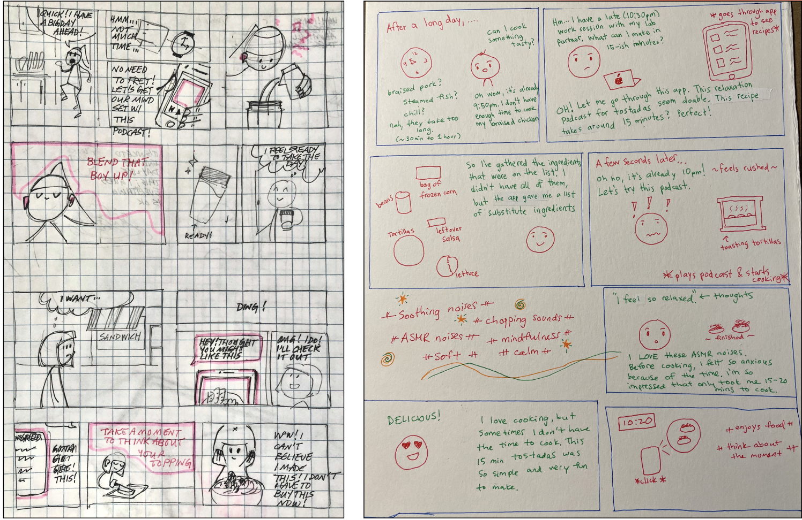

Mindful Mealtime Media is a meditative cooking podcast with an emphasis
on noticing sensations and celebrating mistakes. We planned to meet
students' needs by providing bi-monthly grocery lists and recipes via
text, e-mail, or physical mail service.
There is a podcast that was distributed across multiple online channels
including Spotify, Youtube, and our speical website. Listeners can find
community, share insights, and enjoy immersive play-mode to enrich their
mindful cooking experience.
This project was created for a 14 week course, ARTG3463: Experience
Design 2, at Northeastern University with the objective of creating
compelling human-centered experiences.
Group Members
Samantha Liu
Ava Nordling
Caroline Thibault
Ruihan Wang
Linda Zeng
Role
Prototyping, User Research, Wireframing
Tools
Canva
Figma
Miro
Wix
Timeline
January 2021 - April 2021
We celebrate mistakes, discourage perfection, and relish in the richness
of the present moment. Take the fear out of cooking and let us guide you
along the journey.
- Mindful Mealtime Media
Project Timeline
Week 1 (1/19-1/26)
Week 2 (1/26-2/2): Research
Week 3 (2/2-2/9): Project Proposal
Week 4 (2/9-2/16): Planning Research (Survey + Interviews)
We kicked off our primary research by narrowing down the problem space
that we wanted to explore and defining our goals for primary research.
We each brainstormed ideas for questions to ask to our sample audience
to learn more about their:
cooking process
cooking support
eating experiences
meal inspiration
ideal meal experience
grocery shopping experience
priorities in a meal experience
pain points/barriers to enjoyable meal preparation
A sample size of 15 college students responsed to the survey we
released. From these results, my group learned that the information we
were more interested in learning was much more personal, qualitative,
and emotional. We thought that an in-depth interview or cultural probes
would be a better fit for what we were looking for because we wanted
understand the “why” behind students' cooking experiences and other
alternatives students utilize other than cooking. With these findings,
my group decided to shift our project focus:
Focus: We want to make the meal preparation experience easier for
young individuals just starting to fend for themselves.
Actors: 18-24 year olds with limited cooking experience
Action: Preparing meals - includes finding meal inspiration,
grocery shopping, planning, cooking, nourishing your body
Context: Being new to cooking, little experience, first time
having to cook for themselves
Cultural Probes
We understood that cooking is a very personal and emotional experience,
intrinsically tied to a person's background, taste, skill-level,
energy-level, or daily mood. In order to truly understand students'
experiences, we thought it best to capture a snapshot into their lives by
conducting interesting visual cultural probes. To determine which cultural
probes would be the most impactful for gathering the type of data we
wanted, we decided to test our methods on ourselves first.
Method 1: Meal Log
Description: Photo journal your meal prep experience for the week by
taking candid photos of the food you eat, reflecting on the process, and
your emotions surrounding your meals.
Method 2: Three Scenarios
Draw the following three meal preparation scenarios:
Typical weekday meal experience
Ideal weekday meal experience
Ideal weekend or dream meal experience when you have all the time and
resources you could need
What do you feel, think, and do in these three scenarios?
Method 3: Love + Breakup Letter
Write a love and breakup letter to two different aspects of your meal
preparation lifestyle.
For instance, you can choose to serenade your favorite dish or say goodbye
to an old habit.
Cultural Probe Takeaways
We came to a conclusion that the meal log activity was:
time-consuming and difficult to do throughout the week
needed to be shortened down into a retrospective rather than a
journaling probe.
The Three Scenarios and Love Letter probes helped us gain perspective on
our experience, and talking through these while illustrating would greatly
help going forward. We planned to use these probes during interviews and
ask the respondents to chat with us while drawing their
current/ideal/dream meal experience.
Interviews
We conducted eight in-depth interviews and collected the three cultural
probes with our target sample audience of college students, then
visualized the data on personal cardsets. Below is an example of a
personal cardset.

Interview Takeaways
After conducting eight in-depth interviews and collecting cultural
probes with our target sample audience of college students, we
synthesized the findings to these main takeaways:
Personas
Using our main takeaways as guidance, each member of the team brainstormed
one persona that represents the current experience, painpoints, goals, and
wants of our audience. Then as a team, we synthesized all our individual
personas and condensed them into two personas that represented the three
main problems our audience experiences:
lack of cooking skills
lack of inspiration
lack of time
Journey Maps
Based on these 2 personas (Luke and Jane), we created 2 journey maps to
that reflects their motivations and painpoints, measured emotions through
color and timeline.
Design Proposal
Using our personas, journey maps and user stories representing main pain
points and wants as inspiration, we developed our design requirements to
represent what criteria our design must meet in order to be useful for
the audience.
Quick & Easy:
I am able to prepare my food quickly
I am able to prepare my food easily and with little mental energy
Social Connection:
I am able to connect with others and socialize
Low Cost:
I am able to prepare my meals at low cost
Comfort & Familiarity:
The food prepared for me feels familiar and welcoming
I am able to eat comfortably and enjoy something that I have been
for a long time
Flexibility/Versatility:
I am able to be flexible with my meal needs for different situations
Learning Community:
I get to learn with others
I get to see that others are learning how to cook also and that
makes me feel less alone
Meal Ideas & Cooking Techniques:
I am able to learn new tips and tricks about cooking to help me
build best routine
I am able to be inspired by cooking at recipe ideas, gaining choices
and variety
Learning Cooking Skills:
I am able to build good cooking practices and figure out what
routine is right/enjoyable for me
Grocery Planning:
I am able to use my time effectively at the grocery store
I am satisfied with good "investments" or purchases at grocery store
At this point, we had identified experiential goals and metrics, and had
gathered enough information to understand our target audiences, we began
to generate ideas through ideation and develop our design concept.
During this creative process of generating, developing, and
communicating new ideas, we brainstormed 25 possible solutions to the
design problem disregarding any feasibility restrictions or constraints.
We then each voted on our top 3 concepts by evaluating all the ideation
concepts against the design requirements. We then consolidated these
ideas into a final 3 ideas: a community recipe annotating app, a
collaborative kitchen, and an AI kitchen.
The collaborative kitchen is an idea for a community kitchen that
would function as a playground for young people to come together and
exploring cooking.
AI kitchen is a screen with virtual assistant AI technology that is
designed for apartments and shared kitchens.
We decided on our final idea by thinking about which solution solved the
most user needs and fit the most design requirements. We decided on a
Cooking Buddy Competition App.
Design Concept
The group devoted 10 minutes to sketching possible iterations for the
primary concept, the cooking buddy competition app. The primary
functions we tried to answer were:
How should the daily support, functional side of the app look? work?
What is a fun, visual way to incentivize users so they see their
progress & rewards?
Includes a time-sensitive weekly challenge side that is casually
competitive
Users can take advantage of a daily support side in the communal
kitchen side of the app where close friends share cooking tips and
joys
Choose a day of the week to try out a weekly challenge
Enter the app by choosing a few of your favorite kinds of cuisine and
your ideal cooking time that fits your schedule
Recieve text reminders with a grocery list and save money by
purchasing items as a group
Follow along with the recipe, video chat your buds in-app and explore
the meal together. Low-stakes, high reward!
Enjoy your meal and watch your progress grow
Share your favorites and see friend's food in the communal side of the
app, where you can offer advice, learn new and easy recipes, or watch
the daily dish video content
This side of the app serves your daily meal support needs
Build your small learning community with a curated, limited,
meaningful feed that won't overwhelm your senses
Use Cases
We created storyboards to visualize how the users would interact with
our product.
Our storyboard follows the journey of Luke, a college student that lives
with his two roommates. Luke's roommates often cook food for him, which
is his motivation to learn how to cook. While scrolling through his
phone, he finds an app that has a cooking community, resouces, and
recipes for various dishes. Luke gives it a try and makes his first dish
for his roommates. A few days later, Luke gets a notification to
participate in a weekly cooking challenge. He decides to ask his
roommates to join this weekly cooking challenge and in the end, they all
have fun learning a new dish and enjoying their food.
Cookingbuds Trial
Thanks to this virtual semester, we had the inspiration to test out our
idea for a trial run through a Zoom call. We decided to make 10 minute
oven-baked tostadas. We followed the recipe by Kristen Maxwell posted on
yellowblissroad.com. Before we all met
up in a virtual meeting room to cook, each person prepared their
ingredients (in their own way) for the dish. During the Zoom call, we
looked through the writing recipe, watched a video tutorial, tried to cook
along with each other, and chatted. In the end, everyone made their dish
in their own unique way.
We had some helpful and interesting takeaways after our trial:
Not everyone followed the directions of the recipe and improvised
as they continued cooking ie. using different ingredients or
substituting for ingredients that they didn't have.
Different prefrences: Some prefered making their own salsa/guac
instead of buying it from the store, which resulted in a longer cooking
time.
People worked at different paces: not everyone needed 10 minutes
to cook or they needed more than 10 minutes to cook.
Background activity/noise made the experience distracting and
listening to everyone talk on the Zoom call while trying to focus on
cooking was overstimulating.
The video chat feature made focusing on cooking a challenge
because not everyone checks the chat.
Takeaways from CookingBuds
Before CookingBuds: Anxiety about preparedness, lack of time, and
excitement about new recipe
During CookingBuds: Anxiety about pace of cooking, lack of
stability/organization, difference in customization, and need to multitask
such as cooking, video chatting, roommates, etc.
After CookingBuds: Enjoyment of socialization, felt impactful, some
discomfort eating in front of each other Everyone mapped out their
experience of what happened before, during, and after the CookingBuds
trial.
Refocusing the Design
At this point, we presented our design proposal to the class. We took
feedback from critique of our design proposal. We realized that this
concept was not the correct solution. Building functional skills did not
improve the cooking experience as much as we had hoped. Thus, we pivoted
our ideas and changed our design goal to building and improving
confidence in our audiences.
Problem Pivot
What people understood our problem statement to be:
Students not having enough time, inspiration, or cooking skills to
properly cook for themselves
Lack of inspiration for cooking
Significance of our problem:
One student agreed that this is a significant problem: cooking does get
boring and she makes the same thing every night. She would want this
solution if it was easy to use Another student said that he needs our
solution, but wouldn't actually use it. His ideal self would use it, but
not in reality.
The main problem:
Students' confidence in their cooking, not inspiration for cooking. For
example, not knowing what to do, lack of confidence in skills and
abilities, feeling intimidated by the time and skills required to cook
New problem statement:
intimitated
embarrassed/ashamed
lack of skills
lack of inspiration
overwhelmed (choice fatigue)
young adults first gaining independence do not feel confident for
themselves
New Design Goal:
confident in their own cooking abilities
confident in uncertainty
confident feeling knowledgeable
confident to try new things
feeling confident providing for themselves
autonomy/independent
not feeling insecure/embarrassed/ashamed
confidence to ask for support
help young adults to feel confident cooking for themselves
New Design Criteria:
Quick and Easy:
feel less daunted by the task when it could be completed quickly,
efficently, and easily
making fun, inspirational meals
not needing a lot of time to make is desired
Sociable:
feel more comfortable when there is a supportive community for
guidance and support
making fun, inspirational meals are better when the experience is
shared with others
not cooking alone
Accessible:
feel more comfortable cooking with that I have
don't need fancy resources or items
playful/inclusive/accepting
have an inlusive place to learn and grow
don't feel intimidated or scared or ashamed
feel comfortable making mistakes and being myself
know that there will be guidance and will be inviting (accepting of
all levels, you're going to be taught so everyone can join)
Instead of focusing on the functional aspect of cooking, like improving
peoples' cooking skills and confidence through teaching, we wanted to
'meet people on where they are at'. We developed a plan to focus on the
the emotional side of cooking to help people feel more comfortable and
relaxed. Since students will have to cook anyways, their stress can be
reduced and their lives can be improved by turning cooking into an
enjoyable and relaxing experience. We believed this enjoyment of cooking
to be a more impactful problem to tackle than improving in cooking
skill.
We refined our problem statement:
Cooking is one of many overwhelming responsibilities college students
face and it adds to their stress. In the midst of stress, students are
seeking a time to relax and reflect.
College students often feel constrained and stressed with unpredictable
schedules. Even meeting necessary everyday needs such as getting meals
becomes overwhelming or mundane. In face of that stress, we believe that
cooking could become a new source of relaxation.
Design Hypothesis:
If we transform cooking into a mindful and enjoyable experience instead
of it being a mundane responsibility, then cooking can become a mental
therapy tool to destress college students.
Precedents
There are many factors that make college students feel overwhelmed. If we
made a product that delivers comfort and more resilience towards meal
prep, it could make students feel more at peace about one aspect of their
lives (which leads students to feel more stable and okay with unknowns and
new challenges).
Our new goal for the project was to make cooking into a comforting and
relaxing experience in the face of stressful student life.
We also wanted to keep in mind that we wanted cooking to be supported and
people can be playful with it.
For researching precedents, we brainstormed ideas on what models would
address students' feelings that overwhelm them and how we can offer
comfort to the meal prep experience. We researched some product
competitors (services and products that help people feel comfortable with
cooking) such as meal prep kit services, recipe apps/blogs and the air
fryer. We also researched other methods of relaxation like exercise
classes, baking, and kitchen management.
Precedent takeaways
From our precedents research, we learned that we should incorporate the
following into our concept:
Add encouragement + rewards
Facilitate a sense of community
Give users a place to be themselves
Allot time for cooking + socializing
Allow users to schedule time to relax in advance
Show users how cooking/relaxing can be productive
Incorporate a way to track + reflect on feelings of success and
completion
Create an activity that helps users be fully present by focusing on an
immersive task
Incorporate mindfulness + making a conscious choice to unwind
Experiment
We developed a prototype of a six-minute relaxing, mindfulness cooking
podcast and potential Spotify interface visuals for our podcast. Then, our
team recruited a total of 5 students (3 NEU / 2 non-NEU) to listen and
answer some questions about our podcast to gather some feedback on if this
design concept was successful in relaxing students.

Key takeaways from the experiment:
Emphasis on immersive audio experience
Need for flexibility and interaction with podcast itself
Need to consider length of podcast
Interest in different personalities showcased
Priority for individual meditation
Priority for calming visuals, option for video
Preference for environmental/ASMR sounds
Wireframing
In Week 12, we created low-fidelity wireframes for primary interfaces
and produced sample content to emulate the intended experience. To
complement our prototypes, we produced storyboards to illustrate our
service in action.

We drafted a preliminary prototype to further gauge the user's opinions
and experiences. In particular, the testing comprised of:
3-minute smoothie podcast to highlight a different personality or
comfort, in a shoerter time length
Full version of the 10-minute tostadas podcast
low-fidelity wireframes of offered media -- mobile, desktop, spotify,
youtube
Following testing feedback:
We incorporated environmental ASMR sounds
(like the sounds of sizzling and chopping) into the podcast audio to
make it a more relaxing and immersive experience that encourages
listeners to tune into their senses.
We added relaxing jazz music to the intro and outro to set a
mindful mood.
We used calming language throughout with a mindful and playful
tone that reminds audiences to rest and treat themselves with care.
Meditation sessions / breathing exercises are incorporated
throughout the longer podcasts with more of an emphasis on meditation.